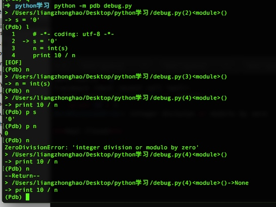
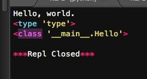
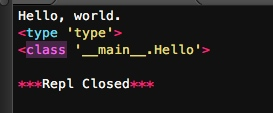

调试
程序能一次写完并正常运行的概率很小，基本不超过1%。总会有各种各样的bug需要修正。有的bug很简单，看看错误信息就知道，有的bug很复杂，我们需要知道出错时，哪些变量的值是正确的，哪些变量的值是错误的，因此，需要一整套调试程序的手段来修复bug。
第一种方法简单直接粗暴有效，就是用print把可能有问题的变量打印出来看看.（这种方法不详细说明了，基本每个写代码的人都比较熟悉这种方法）
断言
凡是用print来辅助查看的地方，都可以用断言（assert）来替代：
# -*- coding: utf-8 -*-
def foo(s):
n=int(s)
assert n!=0,'n is zero'
return 10/n
def main():
foo('0')
main()
assert的意思是，表达式n != 0应该是True，否则，后面的代码就会出错。
如果断言失败，assert语句本身就会抛出AssertionError：

启动Python解释器时可以用-O参数来关闭assert
$ python -O err.py
Traceback (most recent call last):
...
ZeroDivisionError: integer division or modulo by zero
关闭后，你可以把所有的assert语句当成pass来看。
logging
把print替换为logging是第3种方式，和assert比，logging不会抛出错误，而且可以输出到文件：
# -*- coding: utf-8 -*-
import logging
s = '0'
n = int(s)
logging.info('n = %d' % n)
print 10 / n
logging.info()就可以输出一段文本。运行，发现除了ZeroDivisionError，没有任何信息。

加上：
import logging
logging.basicConfig(level=logging.INFO)
之后显示：

这就是logging的好处，它允许你指定记录信息的级别，有debug，info，warning，error等几个级别，当我们指定level=INFO时，logging.debug就不起作用了。同理，指定level=WARNING后，debug和info就不起作用了。这样一来，你可以放心地输出不同级别的信息，也不用删除，最后统一控制输出哪个级别的信息。
logging的另一个好处是通过简单的配置，一条语句可以同时输出到不同的地方，比如console和文件。
pdb
第4种方式是启动Python的调试器pdb，让程序以单步方式运行，可以随时查看运行状态。我们先准备好程序：
# -*- coding: utf-8 -*-
s = '0'
n = int(s)
print 10 / n
然后启动：

输入命令l来查看代码,输入命令n可以单步执行代码,任何时候都可以输入命令p 变量名来查看变量,输入命令q结束调试，退出程序.
pdb.set_trace()
这个方法也是用pdb，但是不需要单步执行，我们只需要import pdb，然后，在可能出错的地方放一个pdb.set_trace()，就可以设置一个断点：
# -*- coding: utf-8 -*-
import pdb
s = '0'
n = int(s)
pdb.set_trace() # 运行到这里会自动暂停
print 10 / n

运行代码，程序会自动在pdb.set_trace()暂停并进入pdb调试环境，可以用命令p查看变量，或者用命令c继续运行
这个方式比直接启动pdb单步调试效率要高很多，但也高不到哪去。
IDE
如果想要有好的设置断点、单步执行体验，就需要一个支持调试功能的IDE。目前比较好的Python IDE有PyCharm：
https://www.jetbrains.com/pycharm
写程序最痛苦的事情莫过于调试，程序往往会以你意想不到的流程来运行，你期待执行的语句其实根本没有执行，这时候，就需要调试了。
总结
虽然用IDE调试起来比较方便，但是最后你会发现，logging才是终极武器。


使用元类
动态语言和静态语言最大的不同，就是函数和类的定义，不是编译时定义的，而是运行时动态创建的。
比方说我们要定义一个Hello的class：
# -*- coding: utf-8 -*-
class Hello(object):
def hello(self, name='world'):
print('Hello, %s.' % name)
h = Hello()
h.hello()
print (type(Hello))
print (type(h))

type()函数可以查看一个类型或变量的类型，Hello是一个class，它的类型就是type，而h是一个实例，它的类型就是class Hello。
我们说class的定义是运行时动态创建的，而创建class的方法就是使用type()函数。
type()函数既可以返回一个对象的类型，又可以创建出新的类型，比如，我们可以通过type()函数创建出Hello类，而无需通过class Hello(object)...的定义：
# -*- coding: utf-8 -*-
def fn(self, name='world'): # 先定义函数
print('Hello, %s.' % name)
Hello = type('Hello', (object,), dict(hello=fn)) # 创建Hello class
h = Hello()
h.hello()
print(type(Hello))
print(type(h))

要创建一个class对象，type()函数依次传入3个参数：
- class的名称；
- 继承的父类集合，注意Python支持多重继承，如果只有一个父类，别忘了tuple的单元素写法；
- class的方法名称与函数绑定，这里我们把函数
fn绑定到方法名hello上。
通过type()函数创建的类和直接写class是完全一样的，因为Python解释器遇到class定义时，仅仅是扫描一下class定义的语法，然后调用type()函数创建出class。
正常情况下，我们都用
class Xxx...来定义类，但是，type()函数也允许我们动态创建出类来，也就是说，动态语言本身支持运行期动态创建类，这和静态语言有非常大的不同，要在静态语言运行期创建类，必须构造源代码字符串再调用编译器，或者借助一些工具生成字节码实现，本质上都是动态编译，会非常复杂。
metaclass
除了使用type()动态创建类以外，要控制类的创建行为，还可以使用metaclass。
简单的解释就是：先定义metaclass，就可以创建类，最后创建实例。
所以，metaclass允许你创建类或者修改类。换句话说，你可以把类看成是metaclass创建出来的“实例”。
metaclass是Python面向对象里最难理解，也是最难使用的魔术代码。正常情况下，你不会碰到需要使用metaclass的情况，所以，以下内容看不懂也没关系，因为基本上你不会用到。
我们先看一个简单的例子，这个metaclass可以给我们自定义的MyList增加一个add方法：
定义ListMetaclass，按照默认习惯，metaclass的类名总是以Metaclass结尾，以便清楚地表示这是一个metaclass：
# -*- coding: utf-8 -*-
# metaclass是创建类，所以必须从`type`类型派生：
class ListMetaclass(type):
def __new__(cls, name, bases, attrs):
attrs['add'] = lambda self, value: self.append(value)
return type.__new__(cls, name, bases, attrs)
class MyList(list):
__metaclass__ = ListMetaclass # 指示使用ListMetaclass来定制类
当我们写下__metaclass__ = ListMetaclass语句时，魔术就生效了，它指示Python解释器在创建MyList时，要通过ListMetaclass.__new__()来创建，在此，我们可以修改类的定义，比如，加上新的方法，然后，返回修改后的定义。
__new__()方法接收到的参数依次是：
当前准备创建的类的对象；
类的名字；
类继承的父类集合；
类的方法集合。
我们测试输出为：
L = MyList()
L.add(1)
print L

动态修改有什么意义？直接在MyList定义中写上add()方法不是更简单吗？正常情况下，确实应该直接写，通过metaclass修改纯属变态。
但是，总会遇到需要通过metaclass修改类定义的。ORM就是一个典型的例子。
ORM全称“Object Relational Mapping”，即对象-关系映射，就是把关系数据库的一行映射为一个对象，也就是一个类对应一个表，这样，写代码更简单，不用直接操作SQL语句。
要编写一个ORM框架，所有的类都只能动态定义，因为只有使用者才能根据表的结构定义出对应的类来。
具体方法参见廖老师的教学网站


Copyright © 2015 Powered by MWeb, Theme used GitHub CSS.